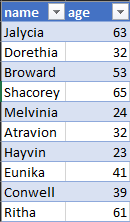
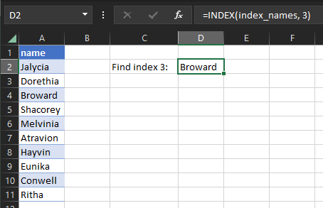
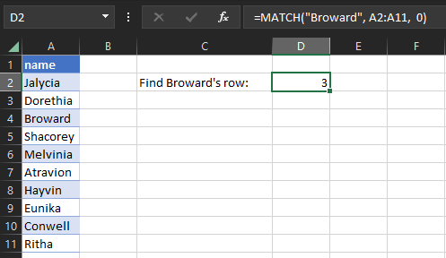
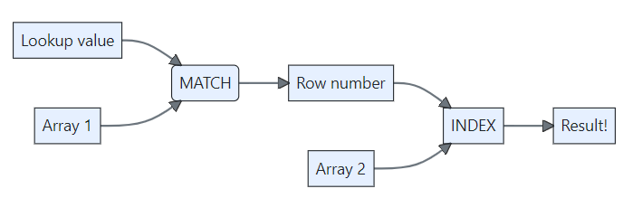
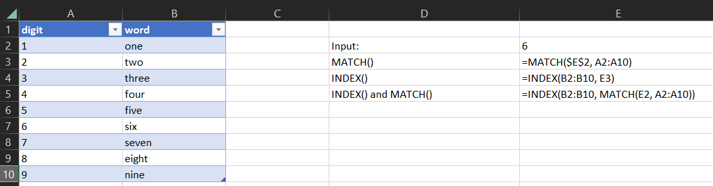

Lookups in Excel (intermediate Excel session 3)
excel
intermediate
Excel skill-builder
This is a session in our intermediate-level Excel skill builder course. This consists of five practical training sessions, designed to be taken together, that are aimed at helping users with some prior Excel experience build and consolidate their skills. The sessions are:
- Excel foundations 1
- Excel foundations 2
- Lookups in Excel (this session)
- Excel programming
- Pivot tables and pivot charts
Session materials
Previous attendees have said…
- 16 previous attendees have left feedback
- 100% would recommend this session to a colleague
- 100% said that this session was pitched correctly

Three random comments from previous attendees
- Insightful
- Really useful sessions thanks Brendan
- Very helpful thanks
Forthcoming session(s)
| Booking link | Date |
|---|---|
| Lookups in Excel (intermediate Excel session 3) | 11:00-13:00 Thu 18th September 2025 |
| Lookups in Excel (intermediate Excel session 3) | 10:00-12:00 Tue 18th November 2025 |
Session outline
- introduction to lookups
- three methods for lookups
-
INDEX()+MATCH() VLOOKUP()XLOOKUP()
-
- partial matching
Introducing lookups
What does a lookup do? Imagine that you have a table like this:
A lookup would let us find someone’s age from their name by:
- taking that name from somewhere
- finding out what row of the table that name is found in
- and then returning the age from that row
INDEX() and MATCH()
-
MATCH()takes a value, and finds what row it occurs in -
INDEX()takes a row, and returns a value from it - older way of doing lookups
- think timeless classic rather than old banger
- simple and flexible
- great way to understand and practice the logic of lookups
INDEX()
-
INDEX()retrieves data from cells. You supply two arguments:- an array (range) of cells
- a row number
-
INDEX(A1:A10, 3)gives you the third row of the range A1:A10 - general syntax:
INDEX(array, row_num, [column_num])-
arrayis the range we want to look in -
row_numand the optionalcolumn_numis the number of the row (± column) that you want
-
Task
- Find the
INDEXworksheet of the sample workbook - We have a one-column table containing names in
A2:A11 - Use
INDEX()to find the value in the third row

MATCH()
-
MATCH()retrieves the row number of a cell. You supply two arguments:- a lookup value
- an array of cells
MATCH(lookup_value, lookup_array, [match_type])
Warning
- the optional
match_typeargument is deathly important: - 1 (or omitted) finds the largest value that is less than or equal to the lookup
- 0 finds the first value that is exactly equal to the lookup
- -1 finds the smallest value that is greater than or equal to the lookup
MATCH()
Task
- Go to the
MATCHworksheet - We have (the same) one-column table of names in
A2:A11 - Use
MATCH()to find the row containing “Broward” - being careful to set match_type appropriately

INDEX() + MATCH()
- given that match gives us the row number, and index takes a row number and returns a value, we can link them up nicely 
- first search through our data to find a
MATCH()ing row - then use
INDEX()to retrieve some other column from that row - the general syntax will be
=INDEX(range, MATCH("Name", range, 0))
Task
- Go to the
INDEX + MATCH (1)worksheet - We have a two column table, and we want a user to be able to supply a number in
E2, and receive the appropriate word inE3 - First, write an appropriate
MATCH()formula to find the row matching the input - Next, write an
INDEX()to take thatMATCH()value and return the appropriate word - Finally, try joining both formulas together in one to give an
INDEX()+MATCH()

Task
- Go to the
INDEX + MATCH (2)worksheet. We have several formulas about Eunika. Can you fix them to give the correct result?
VLOOKUP()
- while
INDEX()andMATCH()is great, it does produce some nasty-looking formulas -
VLOOKUP()was introduces as a neater alternative - roughlyINDEX()+MATCH()in one -
VLOOKUPreturns along rows, allowing us to look up a value in one column, and returns a corresponding value from another column - that sounds ideal, but beware:
VLOOKUP()is much more quirky and unreliable thanINDEX()+MATCH() - here’s the syntax for
VLOOKUP():-
VLOOKUP(lookup_value, table_array, col_index_num, [range_lookup])-
lookup_valueis what we want to look up -
table_arrayis the table that we’re looking up in -
col_index_numis the number of the column that we want to return from -
range_lookupallows either approximate matching (the default) or exact matching (by specifying FALSE)- The major source of oddity. Make sure you check the manual before doing anything serious with
VLOOKUP()
- The major source of oddity. Make sure you check the manual before doing anything serious with
-
-
Task
- Go to the
VLOOKUPworksheet - There are two requests for lookups. Can you populate them with appropriate
VLOOKUP()formulas?
Warning
-
VLOOKUP()generally requires the lookup value to appear in the left-most column of your range - as the second part of the task shows, this requirement can manifest in lots of odd ways
XLOOKUP()
- semi-new (any versions after Excel 2019)
- similar to
INDEX()+MATCH(). Major differences:- it spills, so ideal for returning unpredictable quantities of cells
- provides exact matching by default
- the basic syntax is:
= XLOOKUP(lookup_value, lookup_array, return_array)
Task
- Go to the
XLOOKUP (1)worksheet - There are two requests for lookups. Can you populate them with appropriate XLOOKUP() formulas?
Returning several cells with XLOOKUP()
Task
- Go to the
XLOOKUP (2)worksheet - Set up an
XLOOKUP()supplying a range of columns as thereturn_arrayvalue
Fighting with tables
- note that returning several cells into a table often causes errors
- you may need to work with a range instead if planning to use
XLOOKUP()to return an unpredictable amount of data
Partial text matching
- Excel is not brilliant for partial text matching
- there are a number of commercial add-ins and VBA-based solutions
- those come with risks
- we’ll concentrate on base-Excel here
- three main options:
-
XLOOKUP()withmatch_mode = 2+ wildcard -
VLOOKUP()withrange_lookup = FALSE+ wildcards -
MATCH()withmatch_type = 0+ wildcards
XLOOKUP() with match_mode = 2 + wildcard
-
XLOOKUP()allows partial matching via the “*” wildcard - add “
*” to the end of the partial string you want to match - however, please be aware that:
- this will only reliably match sub-strings at the start of strings
- (so “
ow*” will match “owl” but not “towel”) - adding extra wildcards interacted unpredictably with
match_modein testing
- (so “
=XLOOKUP("*substring*", search col, return col, ,2)
VLOOKUP() with range_lookup = FALSE + wildcards
- as with
XLOOKUP, adding “*” allows wildcard matching - but you can do better with the wildcard sandwich:
"*substring*"- or, if you’re bringing in a reference
"*" & cell_ref & "*"
- or, if you’re bringing in a reference
- ensure you set the (confusingly named)
range_lookupargument toFALSEto allow approximate matching VLOOKUP("*substring*", table, column, FALSE)
MATCH() with match_type = 0 + wildcards
- same wildcard sandwich strategy, with the flexibility of
INDEX()+MATCH() - my preferred solution, largely because the other options are harder to debug
=INDEX(array, MATCH("*substring*", array, 0))
Task
- Go to the
Partial matchingworksheet - Try implementing these three ways of partial matching
Thank yous
I’m grateful to Jennifer Watt, John Mackintosh, Duncan Sage, David Coigach, Michael Robb, Angela Godfrey, Spela Oberstar, Andrew Christopherson, and other members of the KIND network for their valuable suggestions and corrections to these training materials